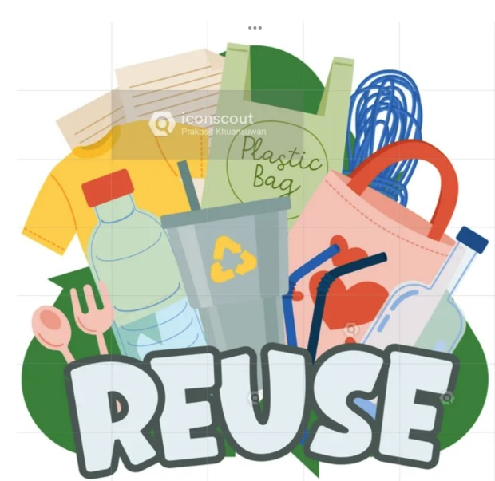

REUSE |
|
|
Reusing is taking old or unwanted items, like material objects or clothes, etc that you might throw away instead of finding a new use for them. Exactly! Reusing is a great way to reduce waste and give items a second life. Here are some examples of how you can find new uses for old items: Glass jars: Use them to store spices, small items, or even as planters. Old clothes: Turn them into cleaning rags, quilts, or tote bags. Cardboard boxes: Use them for organizing, crafting, or as temporary storage. Plastic containers: Repurpose them for organizing tools, screws, or crafting supplies. Broken furniture: Salvage wood or metal parts for DIY projects or repairs. These simple actions not only help the environment but also save money and encourage creativity! Do you have an item in mind that you’d like to repurpose? |
 |
| HOME Reduce Recycle | |